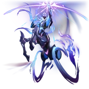

Lan
Aeon of The HuntLore
Menurut mitos dalam "Ode to Reignbow Path", sang Reignbow Arbiter sebelum menjadi Aeon adalah seorang pahlawan anonim dari Xianzhou. Meski dianggap benar oleh sebagian kecil akademisi, tidak ada bukti kuat yang menghubungkan pahlawan tersebut langsung dengan Lan.
Reignbow awalnya adalah manusia fana yang lahir sekitar tahun 1700 Kalender Bintang, sebelum era Tiga Penderitaan. Ia memimpin pasukan Xianzhou melawan Heliobi yang menciptakan bintang mikro merah untuk menjebak armada. Dengan regu bunuh diri, Reignbow menghancurkan mesin bantu Yaoqing dan meledakkan bintang tersebut menjadi lubang hitam.
Setelah kemenangan, Flint Emperor — pemimpin Heliobi — dihukum menjadi sumber energi abadi bagi Xianzhou Zhuming. Kedatangan Ambrosial Arbor di Xianzhou Luofu membawa keabadian, namun Reignbow meramalkan malapetaka mara-struck. Peringatannya dianggap gila hingga ia memanah pohon itu sebagai bukti tekad. Ia dihukum hibernasi kriogenik berkelanjutan karena jasa masa lalunya.
Emanator
Emanator Path The Hunt adalah para individu atau kelompok yang diberi kekuatan luar biasa langsung oleh Lan. Mereka menjadi ujung tombak perburuan kosmik, terutama melawan kekejian Path Abundance.
Di Xianzhou Alliance, peran ini dipegang para Arbiter-General seperti Jing Yuan dan Feixiao, yang dilindungi entitas mirip dewa untuk membasmi ancaman galaksi.
Selain itu, Galaxy Rangers juga diakui sebagai pengikut setia The Hunt yang beroperasi secara independen. Beberapa anggota elit mereka menunjukkan kekuatan setara Emanator.
Tujuan utama mereka adalah memusnahkan sisa-sisa pengaruh Yaoshi, memburu makhluk abadi yang korup, dan memutus rantai penderitaan keabadian — dengan presisi dan pengorbanan total demi keseimbangan alam semesta.
Penampilan
Dalam Simulated Universe, Lan tampil sebagai sosok gagah menyerupai centaur berwibawa. Kulitnya berwarna biru muda, rambut panjang bergradasi biru langit hingga periwinkle ungu melewati pinggang.
Wajahnya tertutup topeng hitam bergambar bintang putih yang menyatu dengan hiasan kepala gelap. Bagian bawah tubuhnya berbentuk kuda, namun kaki belakang digantikan roda kereta perang berapi biru yang menyala-nyala, mencerminkan kecepatan dan kekuatan tak terhentikan.